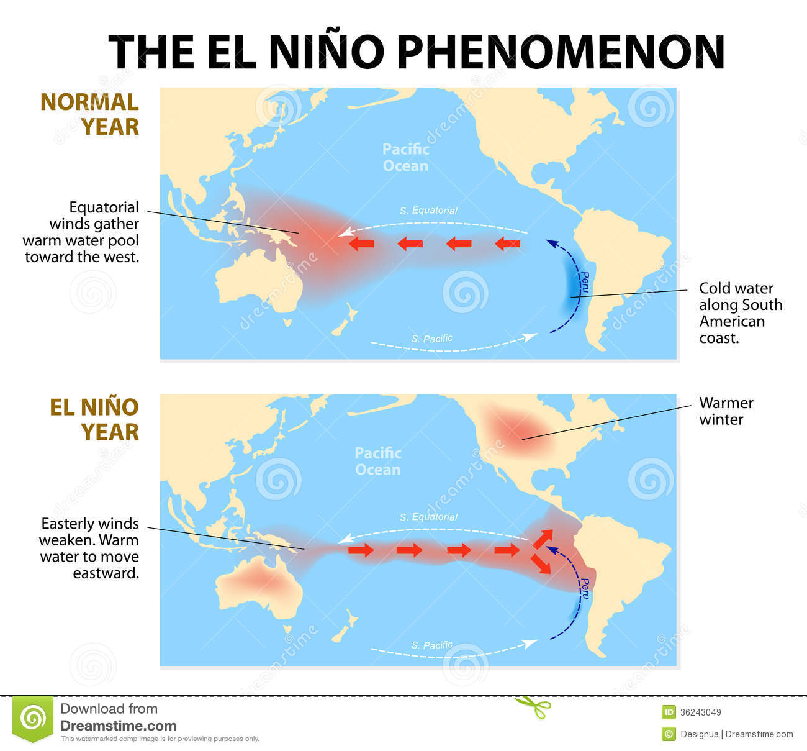

Weather and Climate App
El nino

Of parts of the equatorial Pacific Ocean sea surface temperature and temperature underwater ,More durable than normal warming regions on the north side and south side of the world merchant right air flow rate of less than normal and the Pacific Ocean east-west air pressure swing changes such as El Nino conditions (El nino) season Related events occur and discharge characteristics. Typically (7) times usually occur about once per year, during the Christmas period best by a period (1) Season (1) can be lasted until about two air and Ocean Interactive and steady air signs are recognized as an inverse effect on the phenomenon El Nino. El Nino year in the monsoon period of poor monsoon, monsoon features missing, changing the shape of the wind and rain fly rain, less rain, storm can occurr disorder can be caused by an impact.
Next
Back
Back to disasters